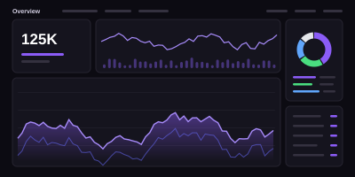
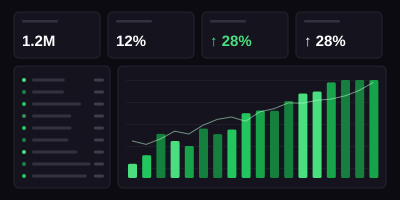
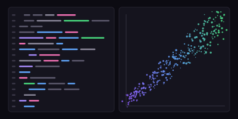
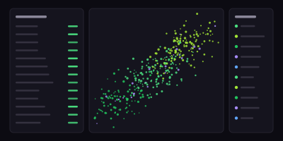

Sosyal MedyaSosyal Medya Sentiment Analizi
Marka konuşmalarını analiz ederek duygu dağılımı ve aksiyon alınabilir içgörüler ürettim.
- Python
- Brandwatch
- Power BI
Senior Data Analyst
Markaların dijital dünyadaki verilerini analiz ederek anlamlı içgörüler çıkarıyor, bu içgörüleri iş kararlarına dönüştürmeye odaklanıyorum.
Sosyal medya analizi, itibar yönetimi, veri analitiği
Markalar için veri odaklı çözümler
Otomotiv, Perakende, FMCG, Finans ve daha fazlası
Daha iyi kararlar, daha güçlü markalar

Sosyal MedyaMarka konuşmalarını analiz ederek duygu dağılımı ve aksiyon alınabilir içgörüler ürettim.

Veri GörselleştirmeÜst yönetime yönelik interaktif raporlama çözümü tasarladım.

Veri AnaliziGerçek bir veri seti üzerinde uçtan uca veri hazırlama ve analiz süreci.

CRM & Müşteri AnalitiğiMüşteri davranışlarını analiz ederek segmentasyon ve hedefleme çalışması gerçekleştirdim.
İstatistik alanındaki lisans eğitimim ve 6+ yıllık profesyonel deneyimimle, veriden anlam çıkarmayı ve bu bilgiyi iş kararlarına dönüştürmeyi hedefleyen bir veri analistiyim. Sosyal medya analizi, itibar yönetimi ve veri görselleştirme alanlarında çalışmalar yürütüyorum.
Daha Fazla Hakkımda


Veri, doğru soruları sorduğumuzda hikayeler anlatır.
Yeni projeler, iş fırsatları veya sadece tanışmak için benimle iletişime geçebilirsin.